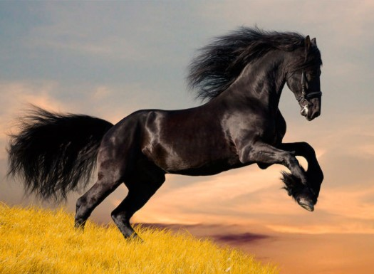

O cavalo (Equus ferus caballus) é um membro da família dos equídeos, que também inclui zebras e burros. Eles foram domesticados há cerca de 6.000 anos, e há muitas raças diferentes, cada uma com suas próprias características e habilidades. Os cavalos têm uma estrutura corporal elegante e poderosa, com um comprimento médio de 2,5 metros e uma altura que pode variar entre 1,4 e 1,8 metros na cernelha. O peso pode variar de 400 a 1.000 quilos, dependendo da raça e do tipo. São herbívoros e se alimentam principalmente de pasto, feno e ração. Sua dieta é rica em fibras, e eles têm um sistema digestivo adaptado para processar grandes quantidades de matéria vegetal. Os cavalos são animais sociais e formam laços fortes com outros membros do grupo. Em estado selvagem, eles vivem em bandos liderados por uma égua dominante, e as interações sociais são importantes para sua saúde e bem-estar.
Curiosidades
1. Visão e Audição:
Os cavalos têm uma visão panorâmica quase completa, com um campo de visão de cerca de 350 graus. Isso lhes permite detectar predadores com facilidade. Sua audição também é altamente desenvolvida, e eles podem girar suas orelhas em diferentes direções para captar sons.
2. Memória:
Cavalos possuem uma excelente memória, tanto a curto quanto a longo prazo. Eles são capazes de lembrar de rotinas, pessoas e outros cavalos, e também de experiências passadas, o que pode influenciar seu comportamento futuro.
3. Galope e Velocidade:
Os cavalos são corredores rápidos e podem atingir velocidades de até 70 km/h em distâncias curtas. O galope é uma das suas formas de locomoção mais rápidas, e os cavalos são conhecidos por suas habilidades em corrida e saltos.
4. Cavalos e História:
Os cavalos desempenharam um papel crucial em muitas culturas e civilizações, desde a guerra até a agricultura e o transporte. Eles foram usados em batalhas, para arar campos e, mais recentemente, em esportes e competições como corridas e saltos.